Ya hemos visto cómo manejar con
registros las entradas y salidas de Arduino, pero nos centrado en las
correspondientes a las I/O digitales. Para el caso de las entradas y
salidas analógicas hay muchos detalles que no se han visto.
Los 6 pines correspondientes a las
entradas analógicas A0..A5 del Arduino UNO corresponde al puerto C.
Estos 6 pines se pueden usar como entradas y salidas digitales como
cualquier otro puerto digital como hemos visto en el apartado anterior.
Además de denominarlas A0..A5, también es posible llamarlas como pines
14..19.
La forma de manejar con registros las
entradas analógicas correspondientes al puerto C con PORT, DDR y PIN es
para usar esos pines como I/O digitales, puesto que los pines de los
microcontroladores son multipropósito como se ha dicho anteriormente.
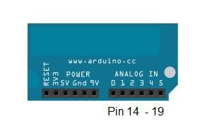
Tabla de equivalencia:
- Pin 14 = Analog in 0
- Pin 15 = Analog in 1
- Pin 16 = Analog in 2
- Pin 17 = Analog in 3
- Pin 18 = Analog in 4
- Pin 19 = Analog in 5
Por ejemplo estas tres instrucciones son equivalentes:
- analogRead(0);
- analogRead(A0);
- analogRead(14);
- digitalWrite(A1);
- digitalWrite(15);
Pin mapping ampliado:

Entradas Analógicas
En las entradas analógicas entran en juego los conversores Analógico Digital (ADC)
Toda la información de ADC para entradas analógicas se encuentra en la página 305 de http://www.atmel.com/Images/Atmel-42735-8-bit-AVR-Microcontroller-ATmega328-328P_datasheet.pdf
Conversor analógico digital (ADC)
Un microcontrolador solo entiende
señales digitales (1’s y 0’s), por lo tanto para poder leer señales
analógicas necesitamos los convertidores Analógico a Digital (ADC).
Cómo funciona un conversor analógico a digital:
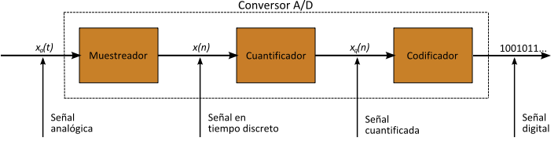
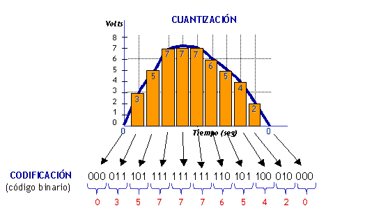
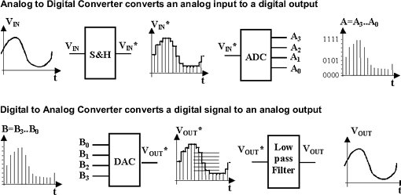
ADC en Arduino
El microcontrolador de Arduino UNO
contiene internamente un conversor analógico a digital de 6 canales. El
conversor tiene una resolución de 10 bits, devolviendo enteros entre 0 y
1023. Los pines analógicos de Arduino también tienen todas las
funcionalidades de los pines digitales. Por lo tanto, si necesitamos más
pines digitales podemos usar los pines analógicos.
En arduino los pines analógicos se definen y tienen las propiedades siguientes: http://arduino.cc/en/Tutorial/AnalogInputPins
El datasheet de ATmega advierte de
hacer lecturas rápidas entre pines analógicos (analogRead). Esto puede
causar ruido eléctrico e introducir jitter en el sistema analógico. Se
aconseja que después de manipular pines analógicos (en modo digital),
añadir un pequeño retraso antes de usar analogRead () para leer otros
pines analógicos.
Un microcontrolador solo entiende
señales digitales (1’s y 0’s), por lo tanto para poder leer señales
analógicas necesitamos los convertidores Analógico a Digital (ADC). Esta
conversión consiste en la transcripción de señales analógicas en señal digital,
con el propósito de facilitar su procesamiento (codificación,
compresión, etcétera) y hacer la señal resultante (digital) más inmune
al ruido y otras interferencias a las que son más sensibles las señales
analógicas.
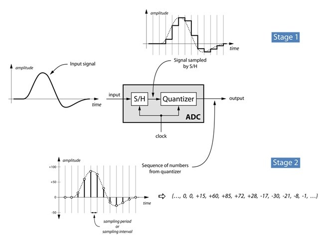
Para el ATMega328p toda la información del conversor analógico a digital se encuentra en la página 305 de http://www.atmel.com/Images/Atmel-42735-8-bit-AVR-Microcontroller-ATmega328-328P_datasheet.pdf
El ATMega328p, al igual que toda la
gama ATMega de Atmel y otros microcontroladores, tienen un ADC integrado
y no necesita ningún hardware adicional, esto nos permite simplemente
conectar un sensor analógico. El ADC interno del microcontrolador tiene
una resolución de 10 bits, esto significa que la tensión analógica de
entrada se convierte en un valor numérico entre 0 y 1023.
NOTA: en el caso de una Raspberry Pi necesitamos de un ADC externo como el MCP3008 https://learn.adafruit.com/raspberry-pi-analog-to-digital-converters/overview
Aunque el ATmega328P tiene 6 pines que
son capaces de ser utilizados como pines de entrada analógicos (Port
C), sólo hay un ADC en el microcontrolador, pero entre el ADC y los
pines hay un multiplexor analógico, esto permite que podamos elegir qué
pin está conectado al ADC, es decir, aunque podemos utilizar todos los
pines, sólo se puede leer el valor de uno de ellos a la vez, para casi
todas las aplicaciones esto es más que suficiente, pero en algunos casos
limitados que necesitan lecturas ADC de alta velocidad se podría
necesitar el uso de ADC externos. En el caso de la ATmega328P los pines que se pueden utilizar una entrada analógica son todos los del puerto C.
También se puede cambiar la tensión
máxima (siempre por debajo de Vcc) que utiliza el ADC como referecia, es
la llamada tensión de referencia y es la tensión contra la que
todas las entradas analógicas hacen las conversiones. Esta tensión de
referencia se toma del pin AREF. Reducir el voltaje máximo del ADC tiene
sentido para mejorar la resolución del ADC. Con 5V la resolución es de
5/1023 = 4,88 mV para cada valor, pero para un sensor que no pasa de
3.3V la resolución es de 3.3/1023 = 3.22mV.
El ADC interno también se puede
utilizar en un modo de 8 bits, donde sólo se utilizan los 8 bits más
significativos de la resolución de 10 bits completa, esto podría ser
útil cuando se trabaja en ambientes ruidosos y sólo necesita 8 bits de
resolución, el uso de este modo es un plus debido a que no es necesario
dedicar más tiempo de CPU calculando los 10 bits completos. El ADC
también puede configurarse para que lleve a cabo una
conversión y detenerse o puede ser configurado para funcionar en un modo
de funcionamiento libre, la primera
opción es la mejor opción cuando queremos leer diferentes pines, y el
segundo es mejor cuando sólo tenemos que leer un pin y esto puede
ahorrar algo de tiempo entre las conversiones.
También tenemos que tener cuidado de
la frecuencia máxima de trabajo del ADC, este valor se especifica en la
ficha técnica y es de 200 kHz, este es el valor del reloj interno de la
circuitería del ADC y se genera dividiendo el reloj principal ATmega,
que en el caso del UNO es 16 MHz, este divisor del reloj se realiza
mediante pre-escaladores y sólo hay un rango limitado de valores, por lo
que la frecuencia máxima que podemos utilizar y estar dentro de la
frecuencia máxima de trabajo es 125 kHz. El siguiente pre-escalador
supone usar el ADC a 250 kHz, en este caso no se puede garantizar la
resolución de 10 bits, pero si una resolución de 8 bits. De todas formas
en caso de necesitar un ADC más rápido se podría usar uno externo.
El ADC puede trabajar en dos modos: single conversion mode y free running mode.
En modo single conversion el ADC hace una sola conversión y para, pero
en modo free running el ADC está continuamente convirtiendo, es decir,
hace una conversión y luego comienza con la siguiente.
El ADC en microcontroladores AVR
utiliza una técnica conocida como aproximación sucesiva mediante la
comparación de la tensión de entrada con la mitad de la tensión de
referencia generada internamente. La comparación continúa dividiendo de
nuevo la tensión y actualizando cada bit del registro ADC a 1 si el
voltaje es HIGH en la comparación o 0 en el otro caso. Este proceso se
realiza 10 veces (por cada bit de resolución del ADC) y genera como
resultado la salida binaria.
Los registros utilizados en el manejo de las entradas analógicas son:
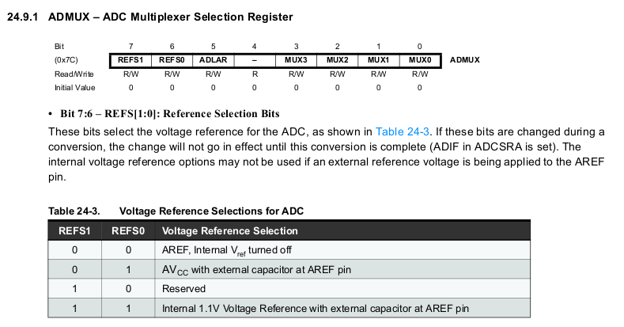
- ADCSRA: ADC Control and Status Register A. Control del ADC y su estado. Página 319.

- ADCSRB: ADC Control and Status Register B.
- ADCL: ADC Data Register Low. Cuando la conversión ADC ha finalizado, el resultado se deja en estos dos registros.
- ADCH: Data Register High

- DIDR0: Digital Input Disable Register 0. Para deshabilitar la entrada digital de los pines analógicos. Página 326.

Diagrama de bloques:

Más información en:
Entendamos el proceso usado anteriormente para calcular la temperatura interna:
1 2 3 4 5 6 7 8 9 10 11 12 13 | ADMUX = (_BV(REFS1) | _BV(REFS0) | _BV(MUX3));
ADCSRA |= _BV(ADEN);
delay(20);
ADCSRA |= _BV(ADSC);
while (bit_is_set(ADCSRA, ADSC));
word wADC = ADCW;
|
Más información:
En caso que el ADC propio de Arduino
sea insuficiente para nuestra aplicación, podemos usar Conversores
Analógico Digital de alta resolución externos:
AREF
Una de las características claves del
convertidor, es su número de bits, que define la resolución con la que
podemos cuantificar esa conversión a digital. En el caso de
Arduino, son 10 los bits que maneja en la puertas analógicas, lo que
significa que su resolución es 1.024 posibles valores. Cuanto mayor sea
esta resolución mejor es la capacidad de aproximación al valor real cuya
conversión buscamos.
Un ADC compara sucesivamente la señal
que queremos cuantificar en la entrada, con una tensión de referencia
contra la que hace las comparaciones.
Un ADC no proporciona valores
absolutos, sino que proporciona una comparación cuantificada con
relación a un valor de referencia. Por eso, al usar el sensor de
temperatura TMP36 en https://aprendiendoarduino.wordpress.com/2017/06/24/ejemplo-sensor-de-temperatura/
hemos calculado la tensión de entrada en uno de los pines Analógicos
como la lectura multiplicada por una relación entre el valor de la
máxima de la entrada 5V con la máxima medida del conversor 1024.
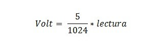
Como las señales que normalmente
manejamos en Arduino están alrededor de los 5V, comparar contra 5V es lo
razonable, porque además la industria tiene una gama completa de
sensores cuyo valor máximo devuelve 5V. Pero cada vez más, la industria
produce electrónica de 3,3V o podemos encontrar sensores con una
sensibilidad de menos de 3V, y si usamos el ADC para digitalizar señales
de pico 3,3V o menos, estamos perdiendo precisión y resolución, porque
estamos desperdiciando una parte de las posibles comparaciones.
En el caso de un sensor a 3.3V, al ser
3,3V el máximo de la tensión de entrada compararlo contra 5V supone que
nunca tendremos lecturas mayores de 1.024 * 3,3 /5 = 675 y seguiremos
teniendo escalones de entrada de 5mV. Como el ADC es un comparador de
tensiones, si pudiéramos cambiar el valor de tensión contra el que
comparamos por una de 3,3V, los escalones serian de 3,3V/1024 =
0,00322265625 o sea 3,2 mV.
La tensión de comparación contra la
que realizamos la conversión de analógico a digital, debería ser el
valor máximo posible de la señal de entrada. Porque es cuándo tendremos
la mejor resolución posible.
El pin rotulado como AREF (Analog
Reference o Referencia Analógica), que no habíamos usado hasta ahora,
permite conectar una tensión externa de referencia, contra la que se
comparará la señal que leamos en los pines A0 a A5.
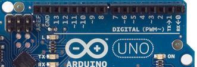
Más información: http://www.prometec.net/aref/
Para cambiar la referencia analógica se debe usar el comando AnalogReference(): https://www.arduino.cc/en/Reference/AnalogReference que nos permite usar los siguientes valores de referencia:
- DEFAULT: the default analog reference of 5 volts (on 5V Arduino boards) or 3.3 volts (on 3.3V Arduino boards)
- INTERNAL:
an built-in reference, equal to 1.1 volts on the ATmega168 or ATmega328
and 2.56 volts on the ATmega8(not available on the Arduino Mega)
- INTERNAL1V1: a built-in 1.1V reference (Arduino Mega only)
- INTERNAL2V56: a built-in 2.56V reference (Arduino Mega only)
- EXTERNAL: the voltage applied to the AREF pin (0 to 5V only) is used as the reference.
El pin AREF dispones de una resistencia interna de 32 Kohms.
Práctica: Entrada Analógica Modo Free Running
Hagamos un sencillo programa de test
para ver el funcionamiento del ADC. Para ello usaremos un potenciómetro
conectado al puerto 0 del PORT C, es decir, el puerto A0 de la placa
Arduino y en en función del valor leido encender o apagar el led
conectado al pin 5 del PORT B, el decir el led en el pin 13.
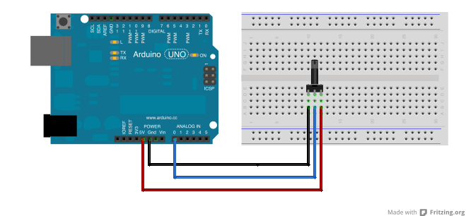
Primero debe darse un reloj al ADC
para establecer la velocidad de muestreo, pero esta tiene un máximo de
200kHz, este valor se establece mediante los prescaler. Estos son
configurados por el registro ADCSRA y los bits relacionados que son
ADPS2, ADPS1 and ADPS0 con valores de prescaler de 2 a 128. Como el
microcontrolador funciona a 16 MHz se usará el prescaler 128 para que el
reloj del ADC funcione a 125 KHz.
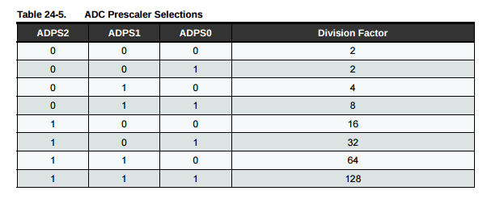
El siguiente paso es configurar el
voltaje de referencia usado por el ADC, este este caso es 5V. El voltaje
de referencia es configurado en el registro ADMUX con los bits REFS1 y
REFS0. En este caso es el valor por defecto y no hace falta modificar.
En el registro ADMUX también podemos
seleccionar en qué canal se va a hacer la conversión mediante los bits
del MUX3 al MUX0. En este caso es el valor por defecto y no hace falta
modificar.
El ADC está casi configurado, solo
hace falta iniciarlo (por defecto está apagado para consumir menos) y
para ello se debe poner a 1 el bit ADEN del registro ADCSRA y luego
poner a 1 el bit ADSC para comenzar la conversión en el mismo registro.
En el registro ADCSRB los bits ADTS2, ADTS1 and ADTS0 determinan como
una nueva conversión comienza, por defecto está en mode free running.
También debe ponerse a 1 el bit ADATE para que en modo free running
comience la conversión.
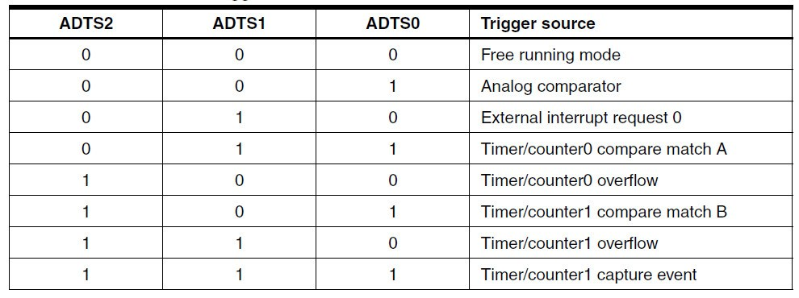
Ahora solo queda leer el valor devuelto por el ADC en los registros ADCH y ADCL.
Luego encender el led 13 (PORTB 5) si el valor leído es mayor que 512 y sino apagarlo.
Solución Ejercicio10: https://github.com/jecrespo/aprendiendoarduino-Curso_Arduino_Avanzado_2017/tree/master/Ejercicio10-Entrada_Analogica_Free_Running
Versión para usar en Atmel Studio (comparar con la versión para IDE Arduino):
1 2 3 4 5 6 7 8 9 10 11 12 13 14 15 16 17 18 19 20 | #include <avr/io.h>
int adc_value;
int main(void){
DDRB |= (1<<PB5);
ADCSRA |= ((1<<ADPS2)|(1<<ADPS1)|(1<<ADPS0));
ADMUX |= ~(1<<REFS0);
ADMUX &= ~(1<<REFS1);
ADCSRB &= ~((1<<ADTS2)|(1<<ADTS1)|(1<<ADTS0));
ADCSRA |= (1<<ADATE);
ADCSRA |= (1<<ADEN);
ADCSRA |= (1<<ADSC);
PORTB |= (1<<PB5);
}
else {
PORTB &= ~(1<<PB5);
}
}
return 0;
}
|
}
Práctica: Entrada Analógica Modo Single Conversión
En el ejemplo anterior usamos ADATE
para activar el auto trigger y el modo free running porque solo estamos
leyendo de un pin analógico. En caso que se vaya a leer diferentes
pines, no tiene sentido usar el modo free running porque existe una
limitación que al cambiar de pin debemos esperar dos conversiones para
hacerlo, porque es el tiempo que le cuesta al multiplexor cambiar de un
pin a otro. Haciendo una conversión simple poniendo el byte ADATE a 0,
no es necesario esperar ese tiempo.
Al usar el modo de conversión simple
(single conversion) debemos comprobar el bit ADSC hasta que vuelve a 0
(cleared) y la conversión está hecha. A cambio no debemos configurar los
bits ADTS y ADATE.
Luego encender el pin 6 si el valor
leído es mayor que 512 o sino encender el pin 7. Poner los LEDs y
resistencias correspondientes.
En este caso poner el potenciómetro en el pin A5.
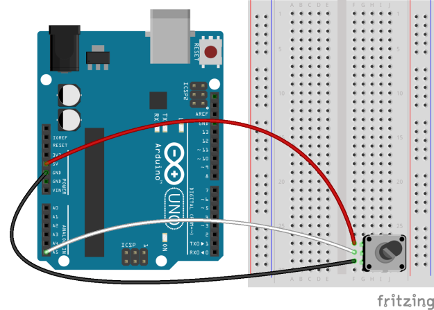
Solución: https://github.com/jecrespo/aprendiendoarduino-Curso_Arduino_Avanzado_2017/tree/master/Ejercicio11-Entrada_Analogica_Single_Conversion
Versión para usar en Atmel Studio (comparar con la versión para IDE Arduino):
1 2 3 4 5 6 7 8 9 10 11 12 13 14 15 16 17 18 19 20 21 22 23 24 25 26 27 28 29 30 31 | #include <avr/io.h>
#define PORT_ON(port,pin) port |= (1<<pin)
#define PORT_OFF(port,pin) port &= ~(1<<pin)
int adc_value;
int main(void)
{
unsigned int adc_value;
DDRD=0xff;
PORTD = 0x00;
ADCSRA = (1<<ADEN) | (1<<ADPS2) | (1<<ADPS0);
ADMUX=0x05;
while (1)
{
ADCSRA |= (1<<ADSC);
while (ADCSRA & (1<<ADSC));
adc_value = ADCW;
if (adc_value < 512)
{
PORT_OFF(PORTD,7);
PORT_ON (PORTD,6);
}
else
{
PORT_ON(PORTD,7);
PORT_OFF (PORTD,6);
}
}
}
|
Salidas Analógicas
Las salidas analógicas puras necesitan
de un conversor digital analógico (DAC). Solo unos pocos modelos de
Arduino disponen de salida analógica pura como el Arduino DUE, el Zero o
el MKR1000.
El arduino due, posee dos salidas analógicas puras mediante dos conversores digital a analógico.
Para manejar las salidas analógicas
puras usamos la función analogWrite() pero disponemos de funciones
adicionales como AnalogWriteResolution() https://www.arduino.cc/en/Reference/AnalogWriteResolution y la librería audio https://www.arduino.cc/en/Reference/Audio
Conversor digital analógico (DAC)
Definición: http://en.wikipedia.org/wiki/Digital-to-analog_converter
Al contrario que las señales
analógicas, las señales digitales se pueden almacenar y transmitir sin
degradación. Los DAC se usan para los altavoces, amplificadores para
producir sonido. Ejemplo de la transmisión de la voz por la líneas
telefónicas.
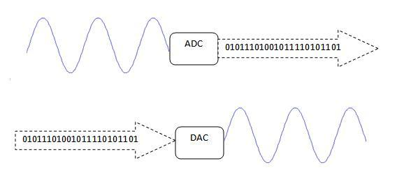
PWM
Los Arduino que no tienen DAC y por lo
tanto no poseen salidas analógicas puras, usan la técnica de PWM para
las salidas analógicas.
Toda la información de PWM para salidas analógicas está en la página 125, 149 y 189 de http://www.atmel.com/Images/Atmel-42735-8-bit-AVR-Microcontroller-ATmega328-328P_datasheet.pdf
Las Salidas PWM (Pulse Width
Modulation) permiten generar salidas analógicas desde pines digitales.
Arduino Uno no posee salidas analógicas puras.
Definición de PWM en la web de Arduino: http://arduino.cc/en/Tutorial/PWM
La modulación por ancho de pulsos
(también conocida como PWM, siglas en inglés de pulse-width modulation)
de una señal o fuente de energía es una técnica en la que se modifica el
ciclo de trabajo de una señal periódica (una senoidal o una cuadrada,
por ejemplo), ya sea para transmitir información a través de un canal de
comunicaciones o para controlar la cantidad de energía que se envía a
una carga.
El ciclo de trabajo de una señal
periódica es el ancho relativo de su parte positiva en relación con el
período. duty cycle = (tiempo que la salida está a uno o HIGH)/ (periodo
de la función)
En Arduino la frecuencia de PWM es de 500Hz. Pero es un valor que puede modificarse en caso que lo necesitemos.
PWM tiene varios usos en los microcontroladores:
- Dimming un LED
- Obtener una salida analógica
- Ofrecer un voltaje analógico entre el 0% y el 100% de Vcc
- Generar señales de audio
- Controlar velocidad de motores
- Generar una señal modulada, por ejemplo para manejar un LED infrarrojo de un mando a distancia.
En las salidas analógicas con PWM se usan los timers de microcontrolador para hacer la forma de onda PWM.
Para generar la señal PWM se utiliza
los timers configurándose varias formas de trabajo. La forma de onda
PWM, en el modo de trabajo más sencillo (Fast PWM), se genera de la
forma mostrada en la siguiente gráfica:
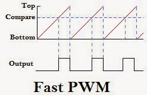
- El registro
del contador se pone en marcha desde cero y cuenta de modo ascendente.
En el momento de empezar la cuenta se activa el pin de salida del PWM.
- Cuando el
valor de este registro se iguala al de otro registro de comparación se
conmuta el pin de salida. El registro del contador sigue contando en
forma normal.
- Cuando el valor del registro del contador llega al final (TOP) vuelve a comenzar (BOTTOM). El pin de salida vuelve a cambiar.
- El tiempo que tarda el contador en llegar al final fija el periodo de la señal.
Los microcontroladores usan varios modos de PWM, uno de ellos el el Fast PWM
que puede ser generado 8 (256), 9 (512) y 10 (1024) bits, una
resolución mayor de 8 bits solo es posible usando un timer de 16 bits.
Otro modo de PWM es Phase Correct PWM que es el que debería usarse para el control de motores. Otro modo es Frequency and Phase Correct PWM.
Esta imagen explica cómo funciona el phase correct PWM, en este caso el timer cuenta hacia arriba y luego hacia abajo:
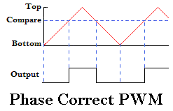
En los microcontroladores AVR, el PWM
está disponible con todos los timers. Timer 0 y timer 2 dan una
resolución de 8 bit mientras que el timer 1 ofrece una resolución de 16
bits. Con 8 bits hay 256 pasos individuales y en 16 bit hay una
resolución de 65536 pasos.
La forma de generar la onda PWM es diferente en cada uno de los modos y la señal obtenida es diferente.
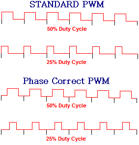
Puesto que las ondas generadas son
diferentes, el centro de la parte en HIGH no es constante en el fast PWM
y sí en el phase correct PWM, esa es la principal diferencia entre
ambos modos y la razón de porque para control de motores es mejor usar el phase correct PWM.
Fast PWM:
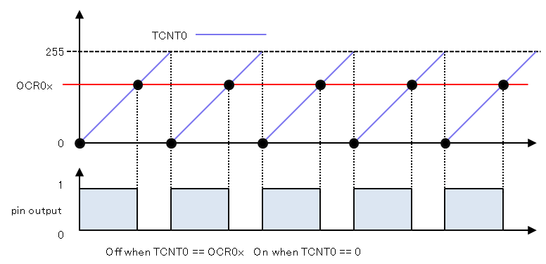
Phase Correct PWM:
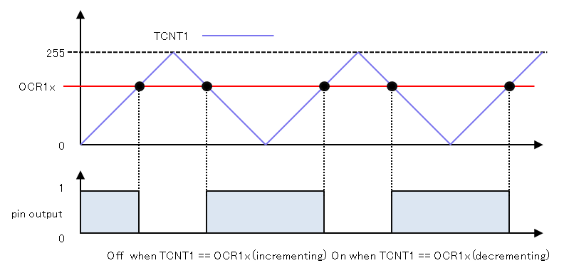
Más información en: https://garretlab.web.fc2.com/en/arduino/inside/arduino/wiring_analog.c/analogWrite.html
El modo PWM en los microcontroladores
AVR se controla por hardware. Esto significa que todo se lleva a cabo
por la CPU AVR. Todo lo que se necesita hacer es inicializar e iniciar
el temporizador y establecer el ciclo de trabajo. El ATmega328p tiene 3
timers y cada timer maneja dos salidas A y B, en total tenemos 6
salidas PWM. Estos temporizadores generan interrupciones cuando alcanzan
el overflow o cuando alcanzan el registro de comparación. Los registros
de control del timer/counter n (n va de 0 a 2) son TCCRnA y
TCCRnB y tienen los principales controles de los temporizadores.

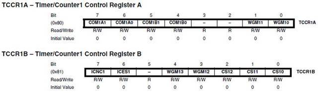
Estos registros tienen varios grupos de bits:
- Waveform
Generation Mode bits (WGM): these control the overall mode of the timer.
(These bits are split between TCCRnA and TCCRnB.)
- Clock Select bits (CS): these control the clock prescaler
- Compare Match Output A Mode bits (COMnA): these enable/disable/invert output A
- Compare Match Output B Mode bits (COMnB): these enable/disable/invert output B
Los registros de comparación de salida
OCRnA y OCRnB establece los niveles en los que las salidas A y B se
verán afectados. Cuando el valor del temporizador coincide con el valor
del registro, la salida correspondiente será modificado como se
especifica en el modo.
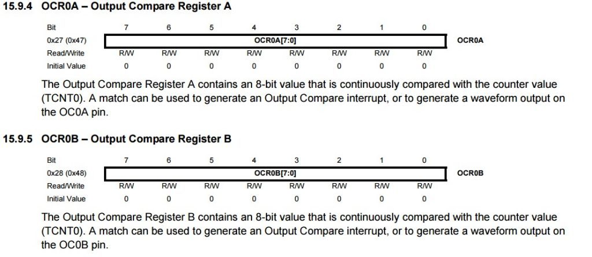
Timers relacionados con los pines PWM de Arduino y salidas de los comparadores:
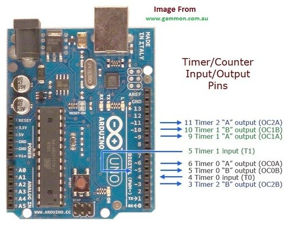
Arduino Uno, Mini y Nano disponen de tres temporizadores.
- Timer0, con una frecuencia de 62500Hz, y preescalados de 1, 8, 64, 256 y 1024.
- Timer1, con una frecuencia de 31250Hz, y preescalados de 1, 8, 64, 256, y 1024.
- Timer2, con una frecuencia de 31250Hz, y preescalados de 1, 8, 32, 64, 128, 256, y 1024.
Los registros para el control de PWM con el timer 0 son TCCR0A y TCCR0B y dentro de ellos los bits WGM02, WGM01 y WGM00:
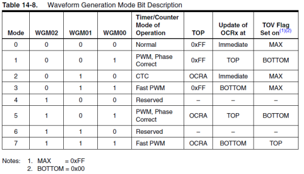
Para utilizar fast PWM hay dos modos
para elegir, los modos 3 y 7, la principal diferencia entre estos dos
modos es que en el modo 3 TOP se fija en 0xFF y en el modo de 7 TOP es
definido por el registro OCRA, esto significa que si existe la
necesidad, podemos cambiar el número máximo que el temporizador hará
hasta que haga overflow, así que esto significa que podemos controlar la
frecuencia y el ciclo de trabajo.
Un buen tutorial de PWM: https://www.luisllamas.es/salidas-analogicas-pwm-en-arduino/
Debemos tener en cuenta los efectos
que supone la rápida conexión y desconexión de la señal pulsada puede
suponer en el dispositivo alimentado. Por ejemplo, en el caso de cargas
inductivas (motores, relés, o electroimanes) la desconexión supondrá la
generación de voltaje inducido que puede dañar la salida digital o el
propio dispositivo, por lo que será necesario disponer de las
protecciones oportunas.
En cuanto a transistores, en general,
los de tipo BJT resultan apropiados para funcionar como amplificación de
señales PWM. Esto no suele ser así en los transistores MOS, donde los
efectos capacitivos del mismo, unidos a la limitación de corriente de
las salidas digitales, frecuentemente harán que necesitemos un driver de
amplificación previo para evitar que el transistor trabaje en zona
activa.
Más información sobre PWM:
Muy buena explicación en profundidad: https://garretlab.web.fc2.com/en/arduino/inside/arduino/wiring_analog.c/analogWrite.html
Incompatibilidades
El uso de los Timer no es exclusivo de
las salidas PWM, si no que es compartido con otras funciones. Emplear
funciones que requieren el uso de estos Timer supondrá que no podremos
emplear de forma simultánea alguno de los pines PWM.
Incompatibilidades más frecuentes:
- Servo:
La librería servo hace un uso intensivo de temporizadores por lo que,
mientras la estemos usando, no podremos usar algunas de las salidas PWM.
En el caso de Arduino Uno, Mini y Nano, la librería servo usa el Timer
1, por lo que no podremos usar los pines 9 y 10 mientras usemos un
servo.
- Comunicación SPI: En Arduino Uno, Mini y Nano, el pin 11 se emplea también para la función MOSI de la comunicación SPI. Por lo tanto, no podremos usar ambas funciones de forma simultánea en este pin.
- Función Tone: La función Tone emplea el Timer 2, por lo que no podremos usar los pines 3 y 11.
Cambiar Frecuencia PWM
Para cambiar la frecuencia de PWM que por defecto en Arduino UNO está a 500 HZ, se puede usar la función definida en http://playground.arduino.cc/Code/PwmFrequency,
donde indicando el pin y el divisor de frecuencia. Esta función cambia
los registros TCCRnB en el timer correspondiente en función del pin, con
el divisor que queramos.

O simplemente en el setup() del sketch inicializar los bits CS00, CS01 y CS02 como se indica en este enlace: https://arduino-info.wikispaces.com/Arduino-PWM-Frequency,
pero teniendo en cuenta que estos cambios en los timers 0, 1 y 2 puede
tener efectos en otras funciones que usen los timers como delay(),
millis() o la librería servo:
- Changes on
pins 3, 5, 6, or 11 may cause the delay() and millis() functions to stop
working. Other timing-related functions may also be affected.
- Changes on pins 9 or 10 will cause the Servo library to function incorrectly.
La frecuencia resultante de PWM es la resultante de la división de la frecuencia base entre el divisor.
- The base frequency for pins 3, 9, 10, and 11 is 31250 Hz.
- The base frequency for pins 5 and 6 is 62500 Hz.
- The divisors available on pins 5, 6, 9 and 10 are: 1, 8, 64, 256, and 1024.
- The divisors available on pins 3 and 11 are: 1, 8, 32, 64, 128, 256, and 1024.
También se puede hacer PWM en todos
los pins, programando nosotros en lugar de dejarlo a la CPU del
microcontrolador y los timers: http://playground.arduino.cc/Main/PWMallPins
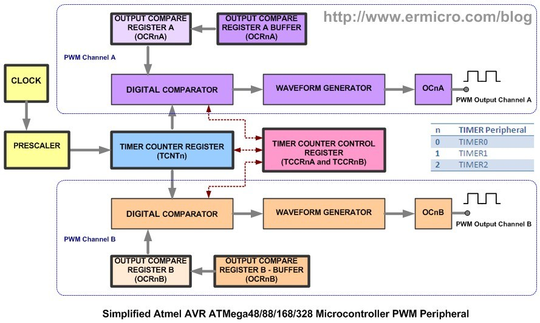
Muy buena explicación de como cambiar la frecuencia a PWM y en general del funcionamiento de PWM
Práctica: PWM Arduino
El código necesario para encender una
salida PWM es muy sencillo gracias a las bibliotecas de Arduino, que
configuran por defecto las salidas de PWM en la función Setup, ocultando
la dificultad de manipulación de los Timer.
Así, en en el ejemplo más básico,
simplemente definimos el pin PWM que queremos emplear, y usamos la
función analogWrite para escribir el valor del Duty Cycle, medido de 0 a
255.
El siguiente código incrementa
progresivamente el valor de una señal analógica desde 0 a 255. Al
alcanzar el valor máximo el contador pasará a 0, por lo que el ciclo
volverá a iniciarse. ¿Ves porque si inicializa el contador?
1 2 3 4 5 6 7 8 9 10 11 12 13 | const int analogOutPin = 11;
byte outputValue = 0;
void setup() {
Serial.begin(9600);
}
void loop() {
analogWrite(analogOutPin, outputValue);
Serial.println(outputValue);
delay(10);
outputValue++;
}
|
Hacer una versión equivalente a bajo nivel donde ilumine el led conectado en el pin 11 con su resistencia.
Pin Mapping: http://brittonkerin.com/cduino/pin_map.html
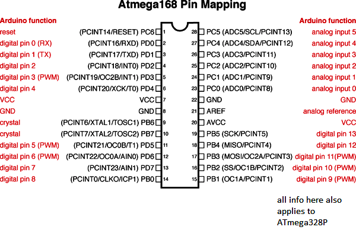
Ver registro TCCR2A en página 203 y TCCR2B en página 206 y OCR2A en página 209 de http://www.atmel.com/Images/Atmel-42735-8-bit-AVR-Microcontroller-ATmega328-328P_Datasheet.pdf
Solución: https://github.com/jecrespo/aprendiendoarduino-Curso_Arduino_Avanzado_2017/tree/master/Ejercicio12-PWM_Avanzado
Práctica: Fade Arduino
Hacer un encendido y apagado progresivo en un led colocado en el pin 6 con su resistencia usando los registros.
Función delay AVR libc http://www.atmel.com/webdoc/avrlibcreferencemanual/group__util__delay_1gad22e7a36b80e2f917324dc43a425e9d3.html
TCCR0A
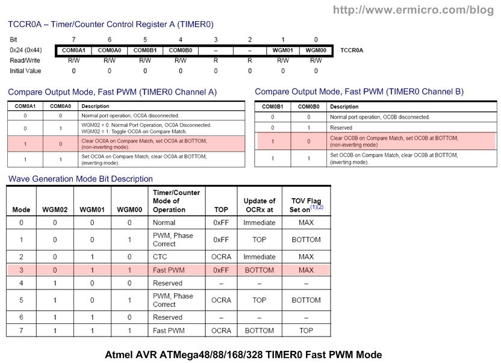
TCCR0B
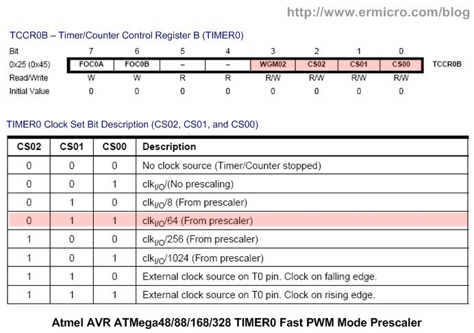
OCR0A
Solución: https://github.com/jecrespo/aprendiendoarduino-Curso_Arduino_Avanzado_2017/tree/master/Ejercicio13-PWM_Fade_Avanzado
Más información: http://www.ermicro.com/blog/?p=1971